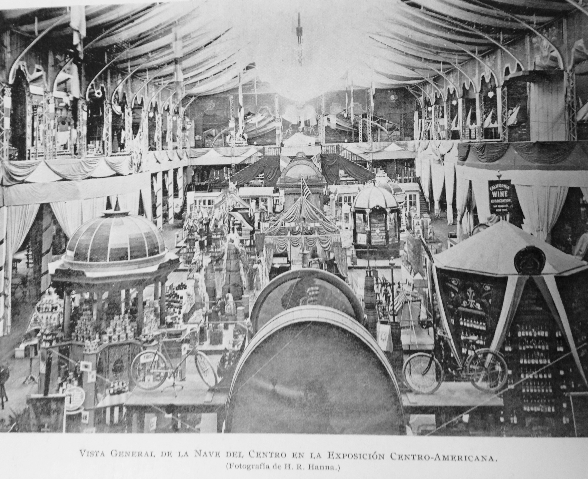
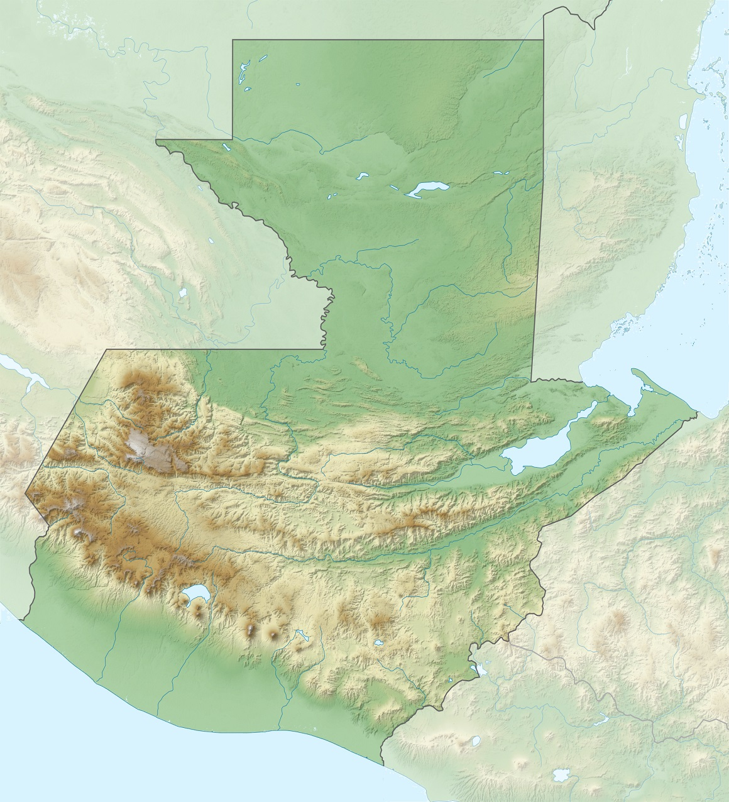
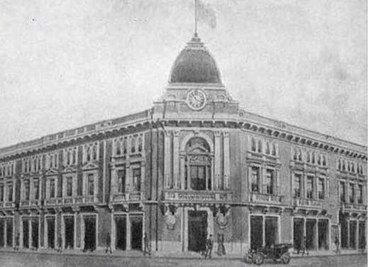
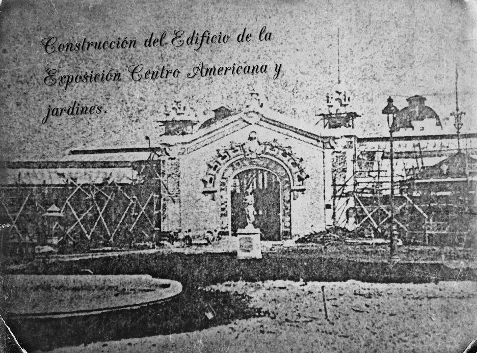

¿Qué fue la Exposición Centroamericana?

La Exposición Centroamericana fue una feria industrial y cultural que se realizó en Guatemala en 1897, bajo la iniciativa del Presidente General José María Reina Barrios. Fue aprobada el 8 de marzo de 1894 por la Asamblea Nacional de Guatemala (Decreto 253).
Objetivos Principales
- Presentar el Ferrocarril Interoceánico entre Puerto Barrios (Atlántico) e Iztapa (Pacífico)
- Exhibir los adelantos de la agricultura guatemalteca
- Mostrar los productos y obras de ingenio de los centroamericanos
- Promover la inmigración y las inversiones internacionales
- Fortalecer la unión centroamericana
- Demostrar la modernidad y progreso de Guatemala
Cronología de la Exposición Centroamericana
Aprobación Oficial
La Asamblea Nacional de Guatemala aprueba la realización de la Exposición Centroamericana a través del Decreto 253, bajo propuesta del Presidente José María Reina Barrios.
Inspiración: Exposición Universal de París
La exposición guatemalteca se inspira en la IV Exposición Universal de París (1889). El gobierno consideraba que "Guatemala exhiba los adelantos de su agricultura" en una "fiesta de paz".
Llegada de Estructuras de Francia
Las estructuras metálicas para los pabellones llegan a Puerto de San José desde Bourdeaux, Francia, a bordo del vapor Beechly. Trabajadores italianos y franceses son contratados para instalar los edificios.
Inauguración Oficial
A las 11 de la mañana se realiza la inauguración oficial. El Presidente Reina Barrios declara abierta la exposición. Presionan un botón conectado a líneas cablegráficas. Se disparan cañones, suenan silbatos de locomotoras y repiquetean las campanas de las iglesias. 180 marinos del barco estadounidense Philadelphia participan en el desfile.
Desarrollo de la Exposición
La exposición permanece abierta durante cuatro meses. Los pabellones se inauguran progresivamente. Se instala iluminación eléctrica desde el 1 de enero para trabajar también durante la noche.
Clausura de la Exposición
La exposición es clausurada. Aproximadamente 40,000 visitantes asistieron durante los cuatro meses de operación. La exposición no alcanzó sus objetivos principales debido a problemas económicos del país.
Fallecimiento del Presidente
El Presidente José María Reina Barrios es asesinado, parcialmente como consecuencia de los fracasos de la exposición y la crisis económica del país.
Países Participantes

La Exposición Centroamericana contó con la participación de múltiples naciones, tanto centroamericanas como internacionales:
Guatemala
El país anfitrión presentó sus productos naturales (café, cacao, maíz, caña de azúcar), ídolos mayas, indumentaria indígena y objetos históricos como la mesa donde se firmó el Acta de Independencia de 1821.
Chile
Presentó productos agrícolas como garbanzos, arroz, cebada, frijoles, trigo y maíz. Mostraba innovación en industrias de conservación de alimentos, bebidas alcohólicas de alta calidad y propuso establecer relaciones comerciales directas.
Costa Rica
Participó con cuatro delegados que mostraron la educación costarricense (366 escuelas públicas, 10,300 niños) y muestras zoológicas. Costa Rica fue reconocida como el país hispanoamericano más ilustrado de la época.
Alemania
Compartió edificio con Suiza en el pabellón "Krupp", previamente usado en la Exposición Colombina de Chicago. Exhibieron dinamita, colores de anilina, agua de colonia, cerveza de exportación, papeles, relojería y carbones eléctricos.
Francia
Participante importante que suministró las estructuras de los pabellones principales. Exhibió productos e innovaciones industriales de la época.
Otros Países
También participaron: Bélgica, España, Estados Unidos, Inglaterra, Italia, México, Perú, Rusia y otros. Honduras, El Salvador y Nicaragua no pudieron abrir sus pabellones al público por problemas de transporte.
Características de la Exposición



Ubicación
Bulevar 30 de Junio (actual Avenida La Reforma), en la finca nacional "El Recreo", cantón Exposición, en la Ciudad de Guatemala.
Infraestructura
17 edificios principales de diferentes proporciones. El salón principal medía 95 metros de largo por 45 metros de ancho. Incluía pabellones para restaurantes, oficinas administrativas y exhibiciones especializadas.
Iluminación
Desde el 1 de enero de 1897 se instaló iluminación eléctrica avanzada para esa época, permitiendo trabajar también durante la noche.
Asistencia
Aproximadamente 40,000 visitantes durante los cuatro meses que estuvo abierta la exposición.
Contexto: Las Exposiciones Universales
La Exposición Centroamericana se enmarca en el movimiento mundial de exposiciones universales que comenzó en el siglo XIX. Estas fueron eventos masivos que mostraban los avances industriales, científicos y artísticos de diferentes naciones.
Exposiciones Universales Relevantes
- 1851 - Londres, Inglaterra: Primera Exposición Universal (The Great Exhibition)
- 1889 - París, Francia: IV Exposición Universal que inspiró la versión guatemalteca
- 1893 - Chicago, Estados Unidos: Exposición Colombina mundial, donde Guatemala también participó
- 1897 - Guatemala: Exposición Centroamericana
Consecuencias y Legado
El Fracaso y Sus Causas
Aunque fue ambiciosa, la Exposición Centroamericana resultó en un rotundo fracaso. Las principales razones fueron:
- La caída del precio internacional del café afectó la economía guatemalteca
- El Ferrocarril Interoceánico no fue completado a tiempo (quedó concluido solo hasta El Rancho)
- El gasto excesivo en obras públicas agotó los fondos nacionales
- Falta de inversión internacional esperada
- La unión centroamericana nunca se logró
Impacto Político y Económico
- Incrementó las dificultades financieras de Guatemala
- Contribuyó a las revoluciones de septiembre de 1897
- Llevó al asesinato del Presidente Reina Barrios en 1898
- Dejó una deuda externa con bancos ingleses
- Su sucesor, Manuel Estrada Cabrera, tuvo que buscar apoyo de Estados Unidos
Impacto en Participantes
Muchos de quienes participaron se vieron afectados. Por ejemplo, el escultor español Justo de Gandarias, quien dirigió la construcción de los pabellones, perdió su inversión y años después vendía cigarrillos en la ciudad de Guatemala.